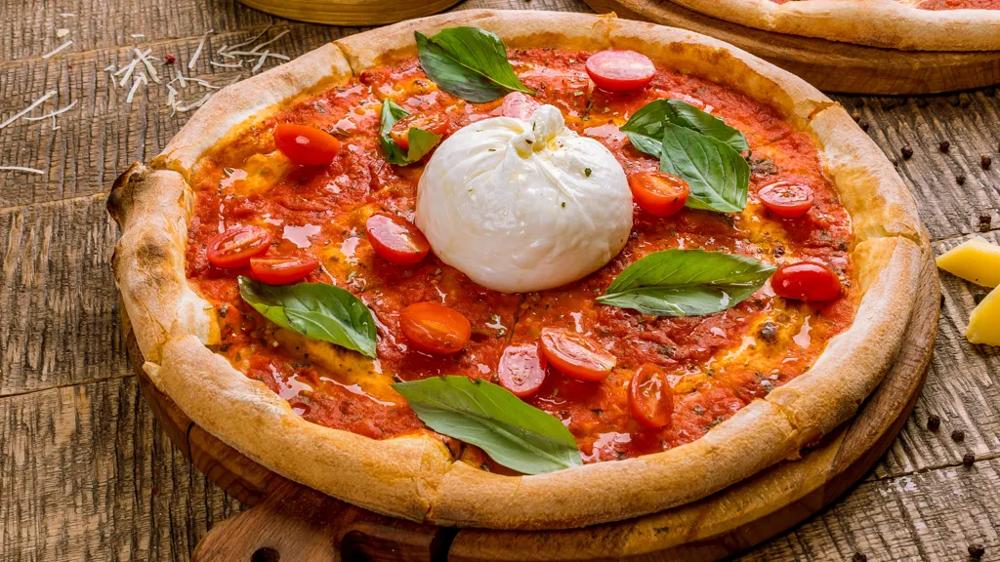

Pizza recipe
Return to main page

Burrata Pizza in 30 minutes
This is probably the best burrata pizza you will ever taste. All ingredients are made in Italy and of best quality.
Please feel free to reach out if you have any questions or comment regarding this recipe.
ingredients
- 3 cups all-purpose flour
- 1 tablespoon active dry yeast
- 1 teaspoon salt
- 1 tablespoon sugar
- 1 cup warm water
- 2 tablespoons Italian olive oil
- Burrata cheeze
- 6 small tomatoes
- Basel
- Tomatoe souce
Steps
- In a large mixing bowl, combine the flour, yeast, salt, and sugar
- Add the warm water and olive oil, and stir until a dough forms
- Turn the dough out onto a floured surface and knead for 5-10 minutes, until the dough is smooth and elastic
- Place the dough in a lightly oiled bowl, cover with a towel, and let it rise in a warm place for 1-2 hour, or until it has doubled in size
- After the dough has risen, punch it down and divide it into two equal portions
- Roll out each portion of dough to the desired thickness and shape, and then add the toppings
- Add tomato souce
- Add tomatoes
- Add the burrata cheeze in the middel of the pizza
Bake in a preheated oven at 225 celcius for 15-20 minuts, or until the crust is golden brown
Additional info:
This recipe will make enough doug for two 12-inch pizzas. You can adjust the recipe to make more or less dough, depending on your needs